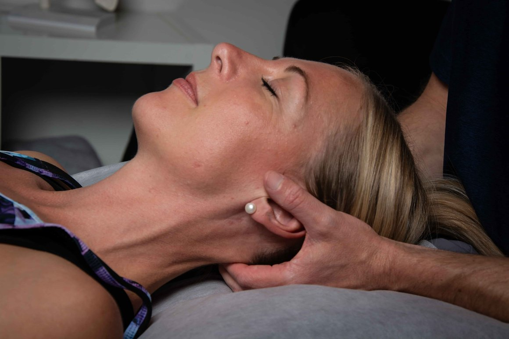

Hvad er fysioterapeutisk massage?
Afspændende og dybdegående behandling der løsner muskelspændinger, forbedrer blodgennemstrømning og giver dig en pause fra hverdagens stress. Bruges som tilskud til andre forløb eller alene.

Kender du det her?
- Generelt højt stress-niveau
- Muskelspændinger i nakke/skuldre
- Søvnproblemer
- Begrænset bevægelighed
- Restitution efter sport
- Tilbagevendende muskelknuder
Fra første besøg til mere afspændt krop
- 1
Undersøgelse og diagnose
Kort samtale om dine spændinger, dagligdag og mål.
- 2
Målrettet behandling
Dybdegående massage, triggerpunkter, fascie-arbejde.
- 3
Øvelser og selvhjælp
Strækøvelser og rutiner du faktisk kan følge.
Rigtige klienter. Rigtige resultater.
"Jeg går fra Nicolais bord helt afspændt. Det er ikke wellness — det er behandling der virker."
"Som triatlet kommer jeg en gang om måneden til vedligehold. Min restitution er markant bedre."
"Min søvn er blevet bedre efter jeg startede med fast massage. Det havde jeg aldrig forventet."
Min tilgang til massage
"Massage er ikke en luksus — det er en del af god rehabilitering. Jeg tilpasser tryk og teknik efter hvad din krop har brug for den dag."

Hvad koster en massage?
Sygesikring Danmark og mange erhvervsforsikringer dækker typisk 30-40% af behandlingen.
Spørgsmål om massage
Hvad er forskellen på fysioterapeutisk massage og almindelig wellness-massage?
Som autoriseret fysioterapeut kombinerer jeg massage med funktionel viden om muskler, led og bevægelse. Du får en målrettet behandling — ikke kun afslapning.
Kan jeg få sygesikrings-tilskud til massage?
Hvis du har en henvisning fra lægen, ja. Sygesikring Danmark og mange erhvervsforsikringer dækker typisk 30-40% — også uden henvisning. Tjek dine vilkår.
Hvor ofte skal jeg komme?
Ved akutte spændinger: 1-2 gange om ugen i en periode. Som vedligehold: typisk hver 3.-4. uge. Jeg anbefaler det rette interval efter din første session.
Hvor lang en session skal jeg vælge?
60 min anbefales første gang så vi kan kigge på dine spændinger i ro. Derefter er 45 min ofte rigeligt til vedligehold.
Hænger spændingerne sammen med noget andet?
Min tilgang er helhedsorienteret — derfor hænger de her behandlinger ofte sammen.
→ Skulder og nakke
Tilbagevendende muskelspændinger sidder næsten altid i nakke og skuldre — og kan behandles målrettet med både massage og funktionel træning.
Klar til at booke en tid?
Book din første tid — jeg anbefaler 60 minutter, så vi har god tid til at lære hinanden at kende.
Book en tid hos mig
Find vej til klinikken
Langeskov Centret 1, butik 35550 Langeskov Få rutevejledning →
Åbningstider
- Man–Fre08:00–18:00
- Lørdag09:00–13:00
- SøndagLukket